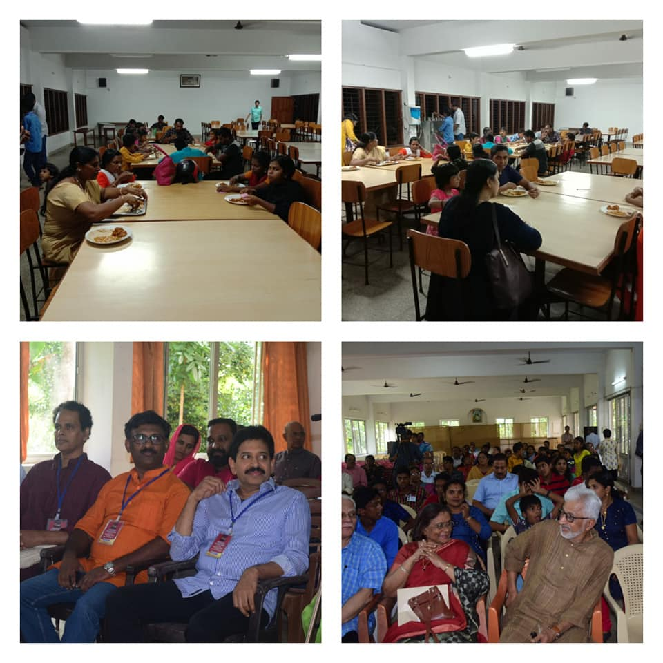
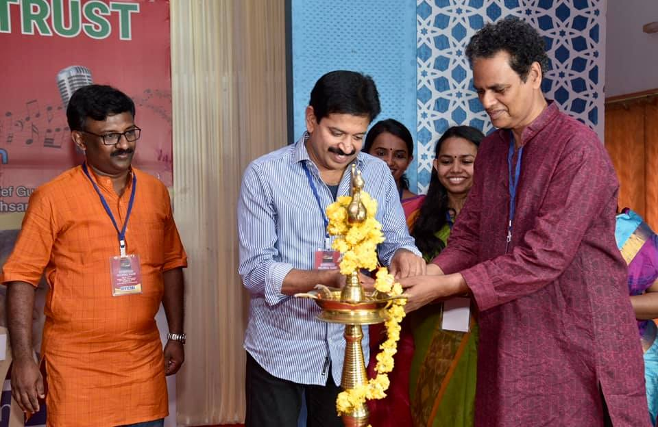
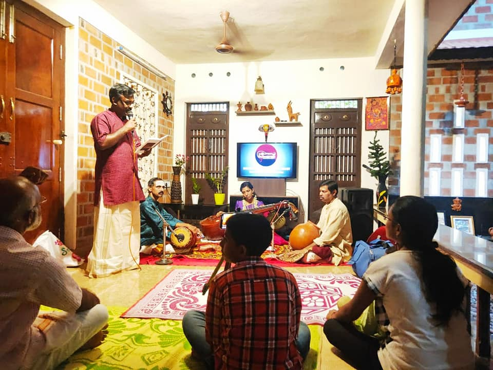

Organizer

Indeevaram Cultural Trust
In 2018, Erickavu N Sunil conceptualized and rolled out the Indeevaram Cultural Trust, a platform designed to provide budding artists with the opportunity to synergize their musical talent.
His passion to bring novelty into the Carnatic music platform also gave shape to 'Laya Vadya Sudha', his percussion ensemble concert band featuring Indian percussion instruments Mridangam, Kanjira, Ghatam, Morsing, Mizhavu, and Tabla. In 2006, he also scripted and directed "Nadasanjeevani", a unique 9-episode program on Music Therapy that was telecasted on Asianet Cable Vision (ACV).
Organizing Events


